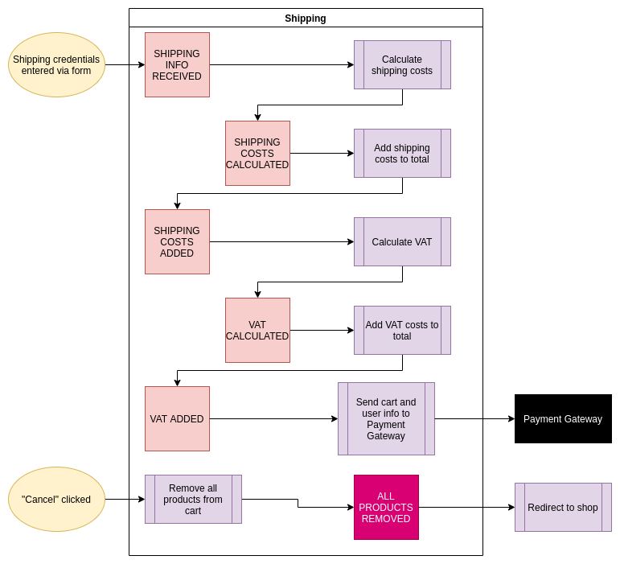
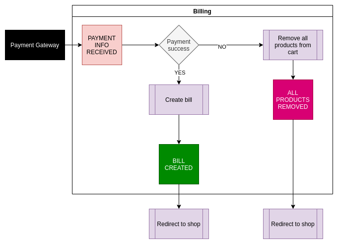

Planning FTW
Blueprinting successful projects
Tomislav Buljević
O meni
- Senior backend developer @ Trikoder
- 11+ godina u developmentu
- radio na različitim platformama i arhitekturama
Početne pretpostavke
- reći računalu što da radi
- biti plaćen za to
Stvarnost je ipak malo drugačija
- ozbiljni, kompleksni projekti znače suradnju
- timski rad nije ništa bez plana
- kad započinješ, nitko ne govori o rokovima i budžetu
Developerski put
- Junior: Rad na zadacima, pokušati naučiti što više
- Mid: Rad na zadacima, pokušati naučiti što više
- Senior:
- planirati arhitekturu
- organizirati tim
- raditi na koheziji i komunikaciji
- ...
Modeliranje podataka
Proces kreiranja modela podataka koji se koriste u aplikaciji.
- objekti (entiteti, resursi, atributi, itd.)
- njihove veze
- pravila
Problemi oko modeliranja podataka?
- obično se previdi
- model raste organski
- greške koštaju PUNO
Ne govorimo li ovdje samo o... dokumentaciji?
Dokumentacija vam može samo djelomično pomoći.
- vizualna reprezentacija modela
- pravila koja određuju modularnost modela
- specifični use case-ovi
Proces nije isti za svakoga
Postoje neki osnovni principi kojih se svi mogu pridržavati
- ponašanje
- storage model
Osnova tech stack-a u Trikoderu
- PHP; Symfony
- layered arhitektura
- JSON API
- relacijska baza podataka
- Redis
- Elastic
Tri nivoa procesa
- Konceptualni
- Logički
- Fizički
Konceptualni nivo
- business strana projekta
- zaprimamo je kroz dokumentaciju
- ne poznaje sustav ni bazu podataka
- podaci kako ih vidi korisnik
Logički nivo
- development strana projekta
- definira logičke veze između podatkovnih objekata
- ne poznaje bazu podataka
- podaci kako ih vidi developer
Fizički nivo
- development strana projekta
- definira veze između podatkovnih objekata u bazi podataka (indexi, funkcije, itd.)
- podaci kako ih vidi sustav
- ovisi o implementaciji
Kako početi?
- pogledati konceptualnu stranu
- izvući najvažnije podatkovne objekte
- varijabilnost objekata (konceptualno, što najviše utječe na objekt?)
Što uzeti u obzir
- struktura i hijerarhija podataka
- kako jedan podatkovni objekt utječe na druge
- koliko je to sve korisno korisniku
Na što trebamo paziti
- Kako izvlačimo podatke?
- Koja je frekvencija zapisa?
- Na koji će način podaci ući u naš model?
- Koje se grupe podataka prikazuju na jednom ekranu?
Kako izbjeći najučestalije zamke?
- pokušajte podatke grupirati u (o)manje cjeline
- što više malih cjelina ima, to je bolje svima
- revidirajte veze između podatkovnih objekata
Proces planiranja
- 1 do 2 sprinta za planiranje projekta (ovisno o veličini projekta)
- svaki sloj se tretira kao zaseban
- odrediti što je MVP, a što planirati za budućnost
Slojevi
- Domena
- Storage
- API
Planiranje Domene
Koristimo više različitih termina:
- Domenski kontekst
- Domenski event (događaj)
- Action (akcija)
- Crna kutija
Važne smjernice
- planiramo za MVP
- pokrivamo samo potrebe businessa logikom, ne više, ne manje
- edge case-ovi su niskog prioriteta
- high overview
Cart Domenski kontekst
Shipping Domenski kontekst
Billing Domenski kontekst
Planiranje baze podataka
Važne smjernice
- pazite na relacije
- budite precizni i koncizni
- uvijek dovodite u pitanje varijabilnost objekta
- neka bude modularno

Planiranje APIja
Važne smjernice
- planiramo za MVP
- ovisi o dizajnu
- važna je suradnja sa consumerom API-ja (front-end ili mobile)
- odrediti veze sa drugim API resursima

Zaključci
- planiranje projekta ovisi o potrebama arhitekture i businessa
- pokušaj - pogreška
- masivno skraćuje vrijeme developmenta
- nakon što kreirate model podataka, revidirajte ga... po mogućnosti sa kolegama
- ukoliko je moguće, izvlačite zaključke iz povijesnih podataka - olakšat će vam život
- svaki put kad dodajete novi feature, revidirajte svoj model
- model vam nije zapisan u kamenu - mijenjat će se tijekom vremena
"U životu samo mijena stalna jest."
-- Heraklit
- planiranje vam daje šansu bolje optimizacije projekta
- treba znati kada stati
- zabavite se i istražujte